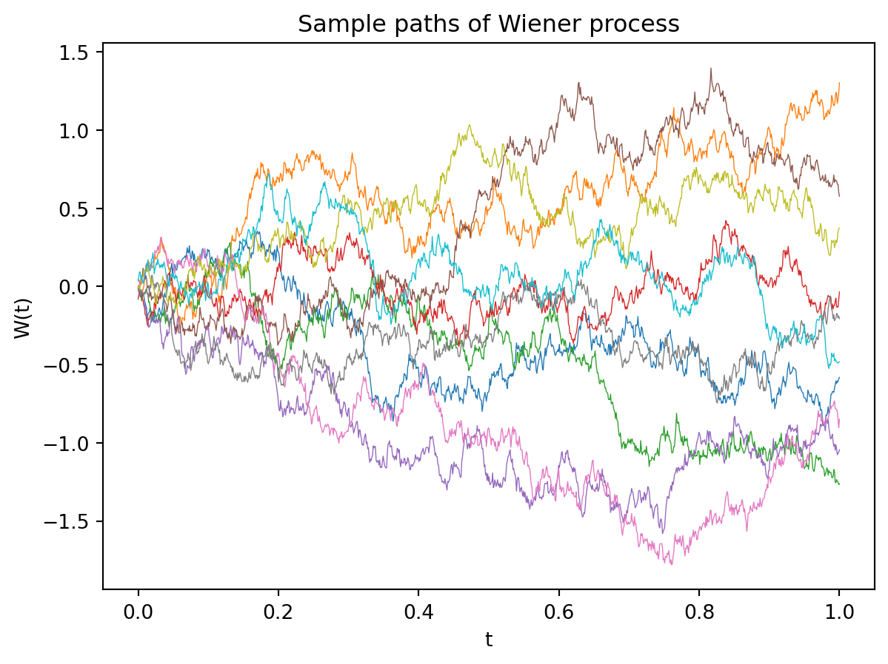
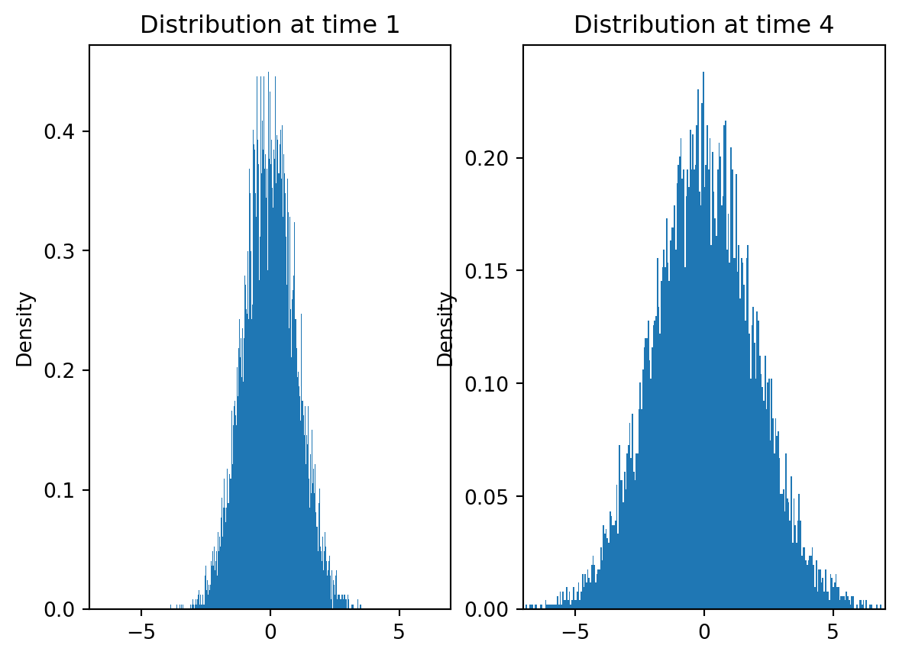
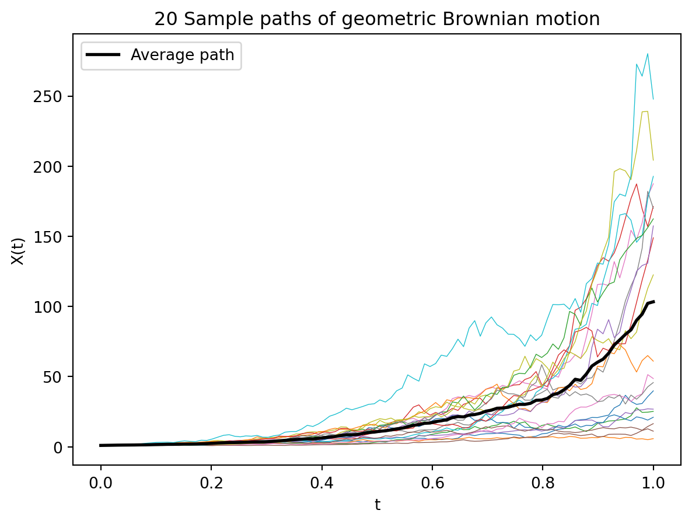

13 Stochastic Differential Equations
In this module, we will look at the Euler-Maruyama method for solving stochastic differential equations. Our focus will be on understanding numerical stability and convergence of the method.
13.1 From Ordinary to Stochastic Differential Equations
Recall that the most basic differential equation, which is at the foundation of theory of ordinary differential equations, is the first order ordinary differential equation (ODE) of the form
\[\frac{dy}{dt} = \lambda y \tag{13.1}\]
where \(\lambda\) is a constant. The solution to this ODE is given by
\[y(t) = y(0) e^{\lambda t} \tag{13.2}\]
We want to modify the ODE Equation 13.1 to include noise:
\[\frac{dy}{dt} = \lambda y + \text{noise}\]
To make sense of this, we’ll make two changes:
- We’ll replace the function \(y(t)\) with a stochastic process \(X(t)\).
- We’ll model the noise as a Wiener process \(W(t)\).
Applications of Stochastic Differential Equations
Stochastic differential equations arise naturally in many applications including financial modeling (stock prices with random market fluctuations), physics (particle motion with thermal noise), biology (population dynamics with environmental randomness), and engineering (control systems with measurement noise).
13.2 Stochastic Processes
A stochastic process is a time-dependent random variable. More precisely, it is a function of the form
\[X(t, \omega): \mathbb{R} \times \Omega \to \mathbb{R} \tag{13.3}\]
where \(\Omega\) is the sample space. For example, if \(\Omega\) is the set of gas molecules in a room, then \(X(t, i)\) could be the position of the \(i\)-th molecule at time \(t\). For a fixed \(t\), \(X(t, \cdot)\) is a random variable. For a fixed \(\omega\), \(X(\cdot, \omega)\) is a function of time. This function, \(X(\cdot, \omega)\), is called a sample path of the stochastic process.
13.2.1 Wiener Process
A Wiener process, \(W(t)\), also known as Brownian motion, is a stochastic process with the following properties:
- \(W(0) = 0\).
- For \(0 \leq s < t\), the increment \(W(t) - W(s)\) is normally distributed with mean \(0\) and variance \(t-s\): \[W(t) - W(s) \sim \mathcal{N}(0, t-s)\]
- The increments are independent.
- The process is continuous but nowhere differentiable.
We can derive the properties of the Wiener process by taking the continuous limit of a random walk. Note that for all time \(t\), the mean of \(W(t)\) is \(0\). However, the variance grows with time. Imagine a box of gas particles all starting at the origin without any initial velocity or external forces. As there is no external force or initial velocity, the center of mass of the gas particles will remain at the origin. However, the gas particles will spread out over time. The Wiener process models this spreading out of gas particles.
From the definition, we can derive several important properties:
- Mean: \(\mathbb{E}[W(t)] = 0\) for all \(t \geq 0\).
- Variance: \(\text{Var}(W(t)) = t\) for all \(t \geq 0\).
- Covariance: \(\text{Cov}(W(s), W(t)) = \min(s,t)\) for \(s, t \geq 0\).
- Distribution: \(W(t) \sim \mathcal{N}(0, t)\) for any \(t > 0\).
Mathematical Subtlety
The nowhere differentiable property of Wiener processes means that expressions like \(\frac{dW}{dt}\) don’t exist in the classical sense. This is why we need special mathematical machinery (Itô calculus) to handle stochastic differential equations properly.

13.3 Stochastic Differential Equations
A stochastic differential equation (SDE) is an equation of the form
\[dX(t) = a(X(t), t) dt + b(X(t), t) dW(t) \tag{13.4}\]
where \(a\) and \(b\) are functions of \(X(t)\) and \(t\). The term \(a(X(t), t) dt\) is the deterministic part of the equation and \(b(X(t), t) dW(t)\) is the stochastic part. The solution to an SDE is a stochastic process \(X(t)\), and \(W(t)\) is the Wiener process.
We write the equation in this form because the Wiener process is not differentiable. We interpret the equation as saying
\[X(t) - X(0) = \int_0^t a(X(s), s) ds + \int_0^t b(X(s), s) dW(s) \tag{13.5}\]
13.3.1 Itô vs Stratonovich Interpretation
We can try to define the above integrals in the usual sense using Riemann sums. The first integral can be written as the limit
\[\int_0^t a(X(s), s) ds = \lim_{n \to \infty} \sum_{i=0}^{n-1} a(X(t_i), t_i) \Delta t_i\]
where \(t_i\) is some point in the interval \([t_{i}, t_{i+1}]\) and \(\Delta t = t/n\). Even though function \(a(X(s), s)\) is a stochastic process, it is mathematically still just a function. The integral can be defined in the usual sense.
However, the second integral is more problematic. We can try to define it as
\[\int_0^t b(X(s), s) dW(s) = \lim_{n \to \infty} \sum_{i=0}^{n-1} b(X(t_i), t_i) (W(t_{i+1}) - W(t_i))\]
where \(t_i\) is some point in the interval \([t_{i}, t_{i+1}]\), \(\Delta t = t/n\), and \(W(t_{i+1}) - W(t_i)\) is normally distributed with mean \(0\) and variance \(\Delta t\). The problem is that this integral does not converge in the usual sense. Where the sum converges depends on which point in the interval \([t_{i}, t_{i+1}]\) we choose to evaluate the integrand. This happens because the Wiener process is not differentiable.
There are two commonly used interpretations of the integral:
- Itô Interpretation: In this interpretation, we use the left end point of the interval to evaluate the integrand. This is the most common interpretation.
- Stratonovich Interpretation: In this interpretation, we use the midpoint of the interval to evaluate the integrand.
Note
It is possible to convert between the two interpretations using the Itô formula. We will assume the Itô interpretation in this module.
13.4 Geometric Brownian Motion
A simple example of a stochastic differential equation is the geometric Brownian motion. This is a model for the evolution of stock prices. The equation is
\[dX(t) = \mu X(t) dt + \sigma X(t) dW(t) \tag{13.6}\]
where \(\mu\) is the drift and \(\sigma\) is the volatility. This is one of the few SDEs for which we can find an exact solution. The solution to the Itô version of the equation is
\[X(t) = X(0) e^{(\mu - \sigma^2/2)t + \sigma W(t)} \tag{13.7}\]
This is a log-normal distribution whose mean is given by \(X(0) e^{\mu t}\) and variance is given by \(X(0)^2 e^{2\mu t} (e^{\sigma^2 t} - 1)\). Note that when \(\sigma = 0\), this reduces to a standard ODE. Unlike Equation 13.2, the solution to the SDE has a quadratic term \(\sigma^2/2\) in the exponent. This term appears due to Itô’s lemma, which is the stochastic analog of the chain rule.
The Itô Correction Term
The appearance of the \(-\sigma^2/2\) term in Equation 13.7 is a direct consequence of Itô’s lemma. This correction term distinguishes stochastic calculus from ordinary calculus and reflects the quadratic variation of the Wiener process.

13.5 Euler-Maruyama Method
Most SDEs do not have analytical solutions. We need to solve them numerically. Similar to ODEs, some simple regularity conditions on the coefficients \(a\) and \(b\) imply that the SDE has a unique solution. Most common SDEs satisfy these conditions. However, unlike ODEs, the solution to an SDE is a stochastic process. We can’t just evaluate the solution at a few points to get an approximate solution. We need to generate several sample paths of the stochastic process to get an approximate solution.
The simplest method for solving SDEs is the Euler-Maruyama method. This is a stochastic analog of the Euler method for ODEs. The Euler-Maruyama method is a recursive method. Given the value of the stochastic process \(X_n\) at time \(t_n\), we can find the value of the process at time \(t_{n+1} = t_n + \Delta t\) using the formula
\[X_{n+1} = X_n + a(X_n, t_n) \Delta t + b(X_n, t_n) \Delta W_n \tag{13.8}\]
where \(\Delta t = t_{n+1} - t_n\) and \(\Delta W_n = W(t_{n+1}) - W(t_n) \sim \mathcal{N}(0, \Delta t)\).
Algorithm: Euler-Maruyama Method
This results in a simple algorithm for solving SDEs:
- Initialize \(X_0\).
- For \(n = 0, 1, 2, \ldots, N-1\), do:
- Generate a random number \(\Delta W_n \sim \mathcal{N}(0, \Delta t)\).
- Compute \(X_{n+1} = X_n + a(X_n, t_n) \Delta t + b(X_n, t_n) \Delta W_n\).
- Return \(X_0, X_1, \ldots, X_N\).
13.6 Convergence of the Euler-Maruyama Method
The EM method provides a numerical approximation to the solution of the SDE. We want to understand how good this approximation is.
Fix a time interval \([0, T]\). Divide the interval \([0, T]\) into \(N\) subintervals of length \(\Delta t = T/N\). Let \(t_i = i \Delta t\) so that \(t_0 = 0\) and \(t_N = T\). Let \(X(t)\) be the analytical solution to the SDE at time \(t\) with initial condition \(X(0)\). We first think of the EM method as generating a sequence of random variables \(X_0, X_1, \ldots, X_N\) defined recursively by
\[\begin{align*} X_0 &= X(0), \\ X_{i+1} &= X_i + a(X_i, t_i) \Delta t + b(X_i, t_i) \Delta W_i \end{align*}\]
where \(\Delta W_i \sim \mathcal{N}(0, \Delta t)\).
Then we are interested in the question of how good the sequence \(X_0, X_1, \ldots, X_N\) is as an approximation to the solution \(X(t_0), X(t_1), \ldots, X(t_N)\). If the EM method is a good approximation method, we should get
\[X_i \to X(t_i) \text{ as } \Delta t \to 0\]
However, as \(X_i\) and \(X(t_i)\) are random variables, we need to be more precise about what we mean by convergence. There are two notions of convergence that we are interested in: weak convergence and strong convergence.
13.6.1 Weak Convergence
With the setup as above, we say that the EM method converges weakly to the solution over the interval \([0, T]\) if
\[\mathbb{E}[X_i] \to \mathbb{E}[X(t_i)] \text{ as } \Delta t \to 0\]
Since we are interested in using the EM method to approximate the solution to the SDE, we need more than just convergence in expectation. We need to know how fast the method converges. We say that the EM method converges weakly to the solution over the interval \([0, T]\) with order \(p\) if
\[|\mathbb{E}[X_i] - \mathbb{E}[X(t_i)]| \leq C \Delta t^p \tag{13.9}\]
for some constant \(C\) that does not depend on \(\Delta t\). Note that \(C\) is allowed to depend on \(T\) and \(X(0)\). We often write this as
\[|\mathbb{E}[X_i] - \mathbb{E}[X(t_i)]| = O(\Delta t^p)\]
to emphasize the rate of convergence.
13.6.2 Strong Convergence
Strong convergence is the convergence of the sample paths. We say that the EM method converges strongly to the solution over the interval \([0, T]\) if
\[X_i \xrightarrow{a.s.} X(t_i) \text{ as } \Delta t \to 0\]
Recall that convergence almost surely means that the probability of the event that the sequence \(X_i\) does not converge to \(X(t_i)\) is \(0\). By Markov’s inequality it is enough to say that the expected value of the distance between \(X_i\) and \(X(t_i)\) goes to \(0\):
\[\mathbb{E}[|X_i - X(t_i)|] \to 0 \text{ as } \Delta t \to 0\]
We say that the EM method converges strongly to the solution over the interval \([0, T]\) with order \(p\) if
\[\mathbb{E}[|X_i - X(t_i)|] = O(\Delta t^p) \tag{13.10}\]
Empirical vs Theoretical Convergence Analysis
In the homework assignment, you will derive the rates of convergence for the EM method for the geometric Brownian motion empirically. However, it is necessary to derive these rates theoretically as for arbitrary SDEs, it is not possible to write an exact analytical solution. The rates of convergence tell us how close the analytical solution is to the numerical solution.
Also, you’ll only estimate \(p\) at the end of the interval i.e., \(t = T\). This is technically not correct. We should find a \(p\) that works for each time step \(t_i\). However, this is computationally expensive and the assumption is that error grows with time so that the error at the end of the interval is the largest.
13.7 Final Remarks
The EM method has a slower rate of strong convergence compared to weak convergence. This is because even though the EM method is a natural extension of the Euler method for ODEs, there are second order terms in the Itô formula (chain rule for stochastic processes) that contribute to the error. This is fixed in the Milstein method, which is a second order method for solving SDEs. However, the Milstein method is more computationally expensive compared to the EM method and has the same weak rate of convergence as the EM method.
Trade-offs in SDE Numerical Methods
- Euler-Maruyama: Simple to implement, but slower strong convergence.
- Milstein: Better strong convergence, but requires computing derivatives of the diffusion coefficient \(b(x,t)\).
- Higher-order methods: Exist but are significantly more complex and computationally expensive.